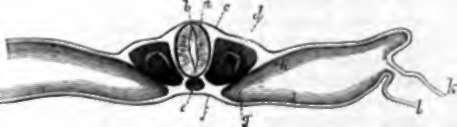
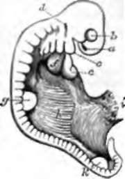

The Embryo. Continued
Description
This section is from the book "Animal Physiology: The Structure And Functions Of The Human Body", by John Cleland. Also available from Amazon: Animal Physiology, the Structure and Functions of the Human Body.
The Embryo. Continued
210. On each side of the chorda dorsalis, in the early embryo, the middle layer, except in the head, is divided into a part near the middle line called the dorsal plate, and a part beyond termed the ventral plate.
The dorsal plates soon exhibit a distinct segmentation, a series of blocks of dense tissue, the primordial vertebræ, making their appearance on each side of the primordial groove, beginning behind the head, and increasing in numbers backwards. Each of these so-called primordial vertebræ contains superficially the rudiment of a segment of the muscular wall of the body, and, beneath that, the commencement of a spinal nerve, which afterwards pushes inwards to join the spinal cord; also between the successive pairs of spinal nerves appear the rudiments of the skeleton, namely, the vertebral and costal arches. The vertebral and costal parts of each segment are indivisible at first, but afterwards, as the common cartilaginous mass grows outwards, it becomes divided, in the thoracic region, into vertebra, rib, costal cartilage, and part of the sternum, and folds round to meet its fellow of the opposite side.
Fig. 153. Transverse Section or Chick of two days incubation. a. Spinal cord; b, central canal of cord; c, outer layer of embryo, forming the cuticle; d, primordial vertebra; e, chorda dorsalis; f, inner layer of embryo, forming intestinal epithelium; g, ventral plate pushing towards the middle line; h, i, outer and inner division of the same; k, outer layer of blastoderm, from which the amnion and inner part of the chorion are formed; l, inner layer of blastoderm which surrounds the yelk.
The ventral plates early split into a deep and superficial part, like the part of the germinal membrane beyond the embryo; but at their inner part, instead of so splitting, they become thicker and push inwards, so that the plates of opposite sides meet together below the chorda dorsalis, and form a mesial plate, in which appear the great blood-vessels and other organs. Among these organs may be mentioned the Wolffian bodies or primordial kidneys (fig. 88), which originally occupy the whole length of the abdominal cavity at the sides of the vertebral column, and are closely connected with the development of the reproductive organs; but disappear at a very early period of foetal life, and are replaced by the permanent kidneys, which take origin between and behind them. The space between the superficial and deep divisions of the ventral plates is the great serous cavity of the trunk, subsequently subdivided into the pericardial, pleural, and peritoneal spaces. The superficial, division is the source of the cutis and other connective tissues of the visceral wall; while the deep division adheres to the inner layer of the embryo, and completes with it the development of the alimentary tube (Remak).
The limbs make their appearance from the ventral plates as little buds, which very early display a division into fingers, the thumb or great toe of each lying nearest the head; and subsequently the elongation of the arm and leg takes place.
211. In the head, the middle layer of the embryo on each side and in front of the chorda dorsalis is called the cephalic plate. We have seen already how it encloses the brain, in the same fashion as the dorsal plates, continuous with it, rise up round the spinal cord. Very soon the brain and parts round it are sharply curved down towards the deep part of the ovum, the margins of the cephalic plate become folded in, and a deep fossa is formed round it, so that the head and neck become separated off from the ovum, while a hood of the outer layer of the germinal membrane rises up over them. In like manner the deep layer of the embryo within the head becomes converted into a cul-de-sac, surrounded with the continuation forwards of the mesial plate.
The margins of the middle layer in the head and neck are thrown into five pairs of processes called branchial processes, separated by clefts; and the foremost of these, uniting with its fellow in the middle line, forms the lower jaw, while the tipper part of the cleft behind it remains as the opening of the ear, and the other clefts entirely disappear in the higher vertebrates, although they are undoubtedly the same clefts as those which in fishes separate the gills throughout life. In front of the first branchial process, the eye is developed in a cleft of the cephalic plate, and separated by a little process (lateral frontal) from the nostril. Between the nostrils, the mesial termination of the cephalic plate is prolonged down to form the middle portion of the upper lip, and is called the middle frontal process. The cheeks are derived from the maxillary lobe, a projection sent forwards from the region at the base of the first branchial arch. The mouth makes its first appearance as a depression of the outer layer of the embryo, which, at a very early period, touches the cul-de-sac of the alimentary tube; and a perforation then takes place. The roof of the mouth, after this, is formed at first by the base of the skull, as it continues to be in fishes throughout life. The palate is a later formation, and is developed from the maxillary lobes, which each send a lamina inwards to meet its fellow of the opposite side in the middle line. Sometimes the union fails to be completed, and the result is a permanently cleft palate. The groove over the upper lip, and the part of the jaw supporting the upper incisor teeth, are derived from the middle frontal process; and when this fails to unite with one or both maxillary lobes, the result is a single or double hare lip.
Fig. 154. Embryo Lamb, magnified six diameters. a, Nostril, and, beneath it, the middle frontal process; b, eye, and, beneath it, the lateral frontal process; c, first branchial process, and, between it and the eye, the maxillary lobe; d, ear; e, ventricular part of the heart; f, right auricle; g, fore limb; h. Wolffian body; i, place where the allantois and umbilical vesicle have been torn across; k, hnid limb.
Continue to:
- prev: 207. The Embryo
- Table of Contents
- next: 212. The Process Of Separation Of The Embryo From The Rest Of The Ovum